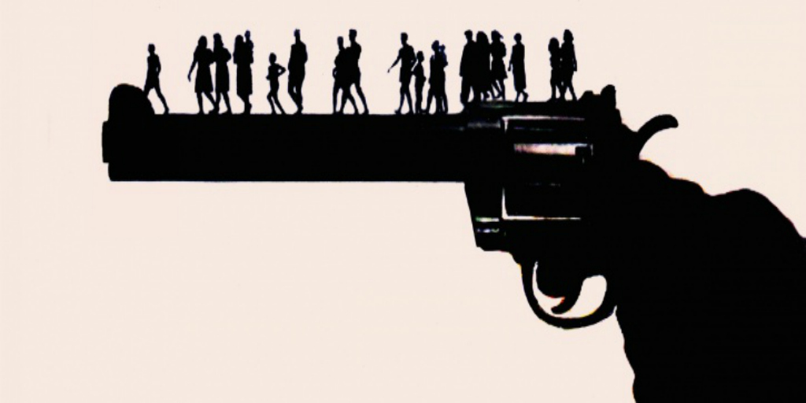

Gun violence, which refers to an aggressive behavior using a gun, has continually been a social issue across the world, including in the United States. Gun violence has been responsible for numerous crimes and deaths, such as homicide, assult with a deadly weapon, and suicide. Gun violence can be intentional or unintentional, however, the prevalence of each type is significantly high.
Want to help eliminate this issue? See what opportunities are available for you below!

Here you can find what you can do to promote gun violence prevention in your local area!
A place to meet others with interests in racial equality and chat!